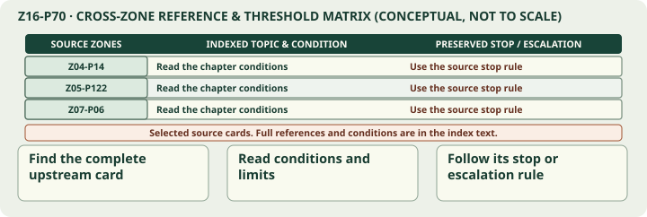

Z16-P70 · Field reference atlas · New manuscript
Master Offline Topic and Keyword Lookup Index: H through P
Provide a fast offline alphabetical lookup mapping topics H–P to exact zone and page ranges while preserving upstream safety gates.
When it applies · Print and offline keyword navigation across all 1,016 encyclopedia pages.
Equipment · Full offline reader (Z01–Z15), primary zone cards, and local emergency and agency references.

Actions
- H–L topics: HABs cyanobacteria (Z04-P14); HAPE, HACE altitude (Z10-P49, Z12-P35); Hazmat shelter-in-place (Z15-P48); Heat stroke cooling (Z10-P46, Z12-P30); Hemlocks water, poison (Z05-P92, P122..P123); HEPA clean rooms (Z15-P33); Hypothermia (Z10-P42, Z12-P08); Ice safety, candled (Z12-P13..P20, Z06-P01..P02); Infant formula (Z14-P75); Iron-rock deflection (Z08-P20, Z11-P29); Jack-o-lantern fungus (Z05-P101, P120); Jerky heat-kill (Z14-P68); Karst bluffs (Z08-P09); Lightning (Z10-P50, Z11-P38); Lost STOP (Z11-P43).[A01, A10]
- M–O topics: Maps, Datum (Z11-P12); Mayapple toxicity (Z05-P71); Mercury, PFAS fish (Z06-P15..P19); Mineral properties, Mohs (Z08-P02, P16..P19); Moonseed vs grape (Z05-P64, P127); Moose safety (Z06-P46); Morels cutaway (Z05-P98); Nightshade (Z05-P124); No-fire alternatives (Z03-P42); Nuts, Allergies (Z05-P73..P82); Outage cold-chain (Z14-P38..P41); Overpass tornado ban (Z15-P16).[A01, A10]
- P topics: Parks, SNA collecting laws (Z08-P55..P56, Z05-P10, Z07-P06); Peat fire ban (Z08-P31); Pet leash trapping safety (Z07-P14, P18); PLB registration (Z11-P56); Poison Control 1-800-222-1222 (Z05-P135, Z10-P61); Poison ivy, sumac smoke (Z05-P130); Pokeweed (Z05-P125); Potatoes green, bitter (Z14-P30); Pressure canner vent (Z14-P54); Puffballs cutaway (Z05-P105); Pulley anchor doubling (Z09-P44).[A01, A10]
Failure recognition · Acting on an abbreviated index entry misses critical qualifications like altitude adjustments, host-tree limits, or medical escalation.[A01, A10]
Verify · Every H–P entry resolves cleanly to exact verified page IDs.[A10]
Stop or change course · Stop relying on keyword pointers alone; open the cited card and check all stop conditions.[A01, A10]
Evidence and editorial notes
- A01 · FEMA / Ready.gov · Make a Plan (current web edition)
- Section: Cross-zone emergency prioritization and stop-threshold preservation · Conditions: Synthesizing Z01-Z15 emergency decision summaries in Z16
Support: Condensed emergency references must retain exact life-safety priorities, evacuation triggers, and call-911 thresholds from upstream primary guidance.
Limitations: Any summary omitting an upstream exception, stop rule, or specialist hold is invalid and must defer to the full zone card. · Conflicting evidence: None noted.
Editorial note: Governs Z16 emergency cross-reference fidelity. · Specialist reviewer: Emergency management and editorial QA reviewer
Primary source · checked 2026-11-24 - A10 · FEMA / Ready.gov · Make a Plan (current web edition)
- Section: Offline reader navigation, historical lineage, and HOLD transparency · Conditions: Using the complete 16-zone offline archive, zone readers, and print proofs
Support: Navigation aids expose draft status, reconstruction lineage, open diagnostic photo needs, and pending specialist holds on every lookup path.
Limitations: Automated validation checks structure and citations only; publication remains HOLD until qualified human review completes. · Conflicting evidence: None noted.
Editorial note: Anchors Z16 offline navigation & governance index. · Specialist reviewer: Accessibility, print QA, and editorial reviewer
Primary source · checked 2026-11-24
Source lineage · New manuscript (Z16 P20 keyword index) · Classification · New manuscript.